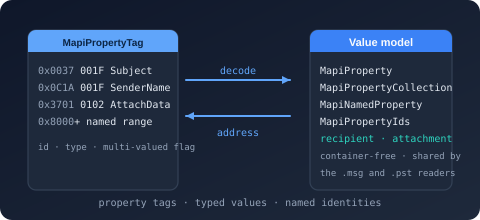

Bodu.Formats.Outlook

Bodu.Formats.Outlook is the shared MAPI value model for the Outlook format readers, and the name of the three-package family that reads Outlook's two on-disk formats. Part of the Binary Formats & I/O topic, the core package carries property tags and types, decoded property values with a tag-addressed collection, named-property identities, the recipient and attachment enumerations, and the shared exception base — with no container knowledge of its own. Two readers build on it: Bodu.Formats.Outlook.Msg opens a single message (.msg / MS-OXMSG) over the Bodu.IO.Compound OLE2 container, and Bodu.Formats.Outlook.Pst opens a personal-folders mail store (.pst / MS-PST, Unicode and ANSI formats) over the Bodu.IO.Pst node database. Both readers are read-only — no authoring, no MAPI session emulation.
Every public type in all three packages lives in the single flattened Bodu.Formats.Outlook namespace (the package names keep their .Msg / .Pst suffixes; the namespace does not). Consumers add one using Bodu.Formats.Outlook;, and a .msg recipient and a .pst recipient are the same OutlookRecipient type over the same MapiPropertyCollection. The container-specific decoders stay internal under Bodu.Formats.Outlook.Msg and Bodu.Formats.Outlook.Pst.
| Concept | Type | Role |
|---|---|---|
| Property tag | MapiPropertyTag | The 32-bit key of every MAPI property: a 16-bit identifier plus a 16-bit MapiPropertyType. |
| Property collection | MapiPropertyCollection | The decoded properties of one object — message, folder, recipient, attachment, store — addressed by tag or by identifier, with typed accessors. |
| Named property | MapiNamedProperty | The durable identity (property-set GUID plus a number or a name) behind a file-specific identifier at or above 0x8000. |
| Message session | OutlookMessage | A disposable session over one .msg file: properties, recipients, attachments, nested messages, bodies. |
| Mail-store session | OutlookMailStore | A disposable session over one .pst file: store properties, the folder hierarchy, and every message within it. |
Which package do I need
| You have | You want | Install | Status |
|---|---|---|---|
A .msg file |
The subject, sender, recipients, attachments, bodies, and every MAPI property of one message | Bodu.Formats.Outlook.Msg |
Preview |
A .pst archive |
The folder hierarchy and every message, recipient, and attachment in a mail store | Bodu.Formats.Outlook.Pst |
Preview |
| Either, in a library that only models properties | The value model alone — tags, collections, named-property identities — without a container | Bodu.Formats.Outlook |
Preview |
A .msg (or any OLE2 file) |
The raw named streams and storages, with no MAPI interpretation | Bodu.IO.Compound |
Stable |
A .pst |
The raw nodes, property contexts, and table contexts, with no MAPI interpretation | Bodu.IO.Pst |
Preview |
The two readers reference Bodu.Formats.Outlook transitively, so installing either one is enough for its format. Install both when an application handles .msg attachments extracted from a .pst — the value model, the recipient type, and the enumerations are shared, so code written against one reader's property surface carries over to the other.
Key concepts
| Concept | Plain-language meaning |
|---|---|
| Property tag | A 32-bit value: identifier in the high word, wire type in the low word. Bit 0x1000 of the type word marks a multi-valued property; identifiers at or above 0x8000 are named. |
| Wire type | The on-disk representation (Unicode, String8, Int32, SystemTime, Binary, …) the decoder turns into a CLR value. A convenience accessor probes the plausible types for an identifier. |
| Named property | A property whose identifier is assigned per file; the mapping from identifier to (property set, name) lives in the file and is resolved through the session. |
| Session | The disposable root object — a message or a mail store — that owns the container. Every folder, message, recipient, and attachment obtained from it is a view bound to its lifetime. |
| Code page | The character set that decodes String8 properties, resolved from the object's own code-page properties and inherited by child objects that declare none. |
| Compressed RTF | The MS-OXRTFCP (LZFu) payload of PidTagRtfCompressed; the readers decompress it on access, bounded by a configurable ceiling. |
| Validation level | How much cross-checking a read performs — the container's own level, reused: CompoundValidationLevel for .msg, PstValidationLevel for .pst. |
For the full glossary, see Core concepts.
Scope and limitations
- Read-only. Neither reader writes, and neither emulates a MAPI session: there is no MAPI message object, no property-change notification, and no RTF-to-HTML de-encapsulation.
- Every property, curated conveniences. All decoded properties are reachable through
Properties;Subject,SenderName,SentTime, and the rest are lazy views that returnnullwhen the property is absent. - Bounded resources. Both option types cap embedded-message nesting, decompressed RTF size, and the attachment payload decoded inline; the
.pstoptions additionally bound node materialization. See resource limits. - PST variants. The mail-store reader opens Unicode and ANSI files; the OST variant is rejected by the container with PstUnsupportedFormatException. Search folders are excluded from folder enumeration.
Worked example — a message and a mail store
using Bodu.Formats.Outlook;
using var message = OutlookMessage.OpenRead("invoice.msg");
Console.WriteLine($"{message.Subject} — {message.SenderName} <{message.SenderEmailAddress}>");
foreach (OutlookRecipient recipient in message.Recipients)
Console.WriteLine($" {recipient.RecipientType}: {recipient.DisplayName}");
using Bodu.Formats.Outlook;
using var store = OutlookMailStore.OpenRead("archive.pst");
foreach (OutlookMailFolder folder in store.RootFolder.EnumerateSubfolders())
{
Console.WriteLine(folder.DisplayName);
foreach (OutlookMailMessage item in folder.EnumerateMessages())
Console.WriteLine($" {item.Subject} — {item.SenderName}");
}
Common scenarios
| Scenario | Reach for |
|---|---|
Test whether a stream is a .msg file |
OutlookMessage.IsMsgFile(stream) |
| Test whether a stream is a PST file of any variant | OutlookMailStore.IsPstFile(stream) |
| Open a message | OutlookMessage.OpenRead(path) / OpenRead(stream) / Open(stream, options) |
| Open a mail store | OutlookMailStore.OpenRead(path) / OpenRead(stream) / Open(stream, options) |
| Walk the folder tree | store.RootFolder.EnumerateSubfolders(), recursively |
| List a folder's messages | folder.EnumerateMessages(); hidden folder-associated items via EnumerateAssociatedMessages() |
| Read a body | BodyText / BodyHtml / BodyRtf on either message type |
| Save an attachment | attachment.Method == OutlookAttachmentMethod.ByValue → attachment.OpenContentStream() |
| Open an attached message | attachment.Method == OutlookAttachmentMethod.EmbeddedMessage → attachment.OpenMessage() |
| Read any property by identifier | Properties.GetString(id) / GetInt32 / GetDateTime / GetBinary / GetStringArray |
| Resolve a named property | TryGetNamedPropertyId(name, out id) / TryGetPropertyName(tag, out name) on the session |
| Enforce every structural rule | ValidationLevel = CompoundValidationLevel.Strict (.msg) / PstValidationLevel.Strict (.pst) |
| Keep large attachments out of memory | OutlookMessageReaderOptions.ReadStrategy = CompoundReadStrategy.Streaming; the .pst reader streams by design |
| Classify a failure | catch (OutlookFormatException) for the family; the container exceptions for corruption beneath it |
Headline types — Bodu.Formats.Outlook
Value model — Bodu.Formats.Outlook
| Type | Purpose |
|---|---|
| MapiPropertyTag | The 32-bit tag: Id, base Type, IsMultiValued, IsNamed; ForMultiValue builds a multi-valued tag. |
| MapiPropertyType | The 16-bit wire-type codes (Unicode 0x001F, String8 0x001E, Int32 0x0003, SystemTime 0x0040, Binary 0x0102, …). |
| MapiProperty | One decoded property: Tag plus a CLR Value. |
| MapiPropertyCollection | The tag-addressed bag: TryGetValue by tag or identifier, GetAll, Contains, and the typed Get* accessors. |
| MapiNamedProperty | A property-set GUID with either a numeric Id or a string Name. |
| MapiPropertyIds | Curated PidTag* identifiers (Subject, SenderName, Body, Html, RtfCompressed, AttachMethod, …). |
| OutlookRecipient | One recipient: RecipientType, DisplayName, EmailAddress, AddressType, and its Properties. |
| OutlookRecipientType / OutlookAttachmentMethod | Originator / To / Cc / Bcc; None / ByValue / ByReference / ByReferenceResolve / ByReferenceOnly / EmbeddedMessage / Ole. |
| OutlookFormatException | The base of the reader exception family. |
Message reader — Bodu.Formats.Outlook.Msg
| Type | Purpose |
|---|---|
| OutlookMessage | The .msg session: OpenRead / Open / IsMsgFile; Properties, the scalar conveniences, Recipients, Attachments, the bodies, named-property resolution, EmbeddedDepth. |
| OutlookAttachment | One attachment: Method, FileName, ContentId, MimeTag, Size; OpenContentStream() / OpenMessage(). |
| OutlookMessageReaderOptions | ValidationLevel, ReadStrategy, DecompressRtf, and the Max* limits. |
| OutlookMsgFormatException | A .msg that is not a compound file or violates MS-OXMSG. |
Mail-store reader — Bodu.Formats.Outlook.Pst
| Type | Purpose |
|---|---|
| OutlookMailStore | The .pst session: OpenRead / Open / IsPstFile; Properties, DisplayName, RootFolder, store-wide named-property resolution. |
| OutlookMailFolder | One folder: DisplayName, ContainerClass, MessageCount, UnreadCount, HasSubfolders; streaming EnumerateSubfolders / EnumerateMessages / EnumerateAssociatedMessages. |
| OutlookMailMessage | One message: the same convenience surface as OutlookMessage, plus Recipients, Attachments, and the bodies. |
| OutlookMailAttachment | One attachment: the same surface as OutlookAttachment; OpenMessage() returns an OutlookMailMessage. |
| OutlookMailStoreReaderOptions | ValidationLevel, BlockCacheSize, DecompressRtf, MaxNodeDataLength, and the shared Max* limits. |
| OutlookPstFormatException | A messaging-level violation of MS-PST; container corruption surfaces as the Bodu.IO.Pst exception family instead. |
Where to go next
- Core concepts — property-tag anatomy, named-property resolution, recipients and attachment methods, code pages, compressed RTF, validation levels, and the resource limits.
- Getting started — install + minimal samples for both readers: sniff, open, walk, read bodies, open attached messages, resolve named properties.
- Bodu.Formats.Outlook guides — reading
.msgfiles and properties and named properties. - Bodu.IO.Pst and Bodu.IO.Compound — the containers beneath the two readers; the PST runnable sample.
- Bodu.Formats.Outlook API reference — full type-by-type docs.
- Binary Formats & I/O topic overview — the readers alongside their containers and the Excel reader.